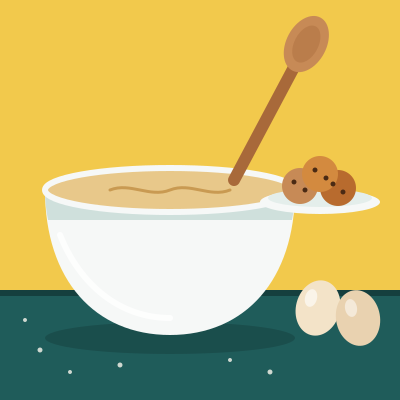

What I've Made
I personally don't keep a recipe book or write down specific notes. My process is simple. I watch a recipe video on YouTube (due to the algorithm), and save the video if it looks good. Then, when I get hungry, I go make it. If it turns out well, I might make it again. If it doesn't, I try to figure out what went wrong and do better next time.
I make both desserts and savory meals. Desserts are a big part of what I do, because I like how much work goes into getting the texture right. A cheesecake can crack or turn out too dense, and cookies can come out flat, dry, or hard as a rock. Getting them right feels like a win. For regular meals, I like to try ideas that mix different flavors, like turning the flavors of yakisoba into a pasta dish.
The chart below shows roughly how many times I've made each type of food. It is just an estimate, since I don't keep track, but it gives a general idea of what I like to cook. Some of these I make over and over, and others I only try once because I'm always looking for something new.
Below the chart is a list of some of the dishes I've made and a short description of each one. I plan to keep adding to it as I try more recipes, and I'm always open to ideas for what to make next.

What I make
Rough number of times I've made each kind of food.
Dishes I've made
- Brown butter chocolate chip cookies: chocolate chip cookies made with browned butter for a nutty flavor.
- Basque cheesecake: a crustless cheesecake with a dark, caramelized top and a creamy middle.
- New York style cheesecake: a classic, dense and creamy cheesecake.
- Yakisoba inspired pasta: pasta made with the sweet and savory flavors of yakisoba.